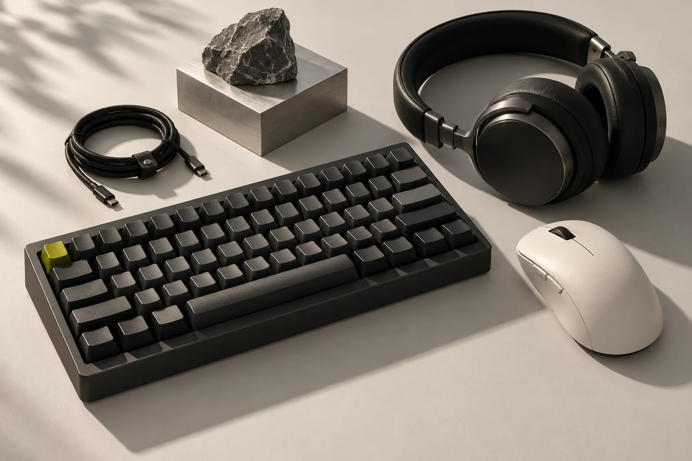

Периферия / Наш подход
Близко
к твоему
делу.
Рабочее пространство — продолжение твоих привычек. Мы собрали каталог, в котором легко разобраться в деталях и услышать собственные предпочтения.
01 / Ясность
Только по делу.
Характеристики, которые помогают принять решение. Тип подключения, формат и назначение — вместо длинного списка обещаний.
02 / Удобство
Всё рядом.
Сравнивай устройства, сохраняй понравившееся и возвращайся к выбору в своём темпе. Каталог, руководство и медиа связаны между собой.
03 / Внимание
С твоим участием.
Удобство нельзя выбрать за тебя. Наше руководство подскажет, что проверить лично, чтобы устройство стало частью твоего рабочего дня.
Мыши. Клавиатуры. Наушники.
Три детали.
Одна история.
Твоя.
Начни с устройства, которого не хватает. Или посмотри на всё рабочее пространство целиком.
К устройствам
«Периферия» — самостоятельный каталог. Здесь можно изучать устройства и сравнивать их характеристики. Оформление заказов и платежи на сайте не предусмотрены.
Избранное и список сравнения сохраняются в этом браузере. Регистрация не нужна. Изображения устройств созданы как визуальные иллюстрации каталога.